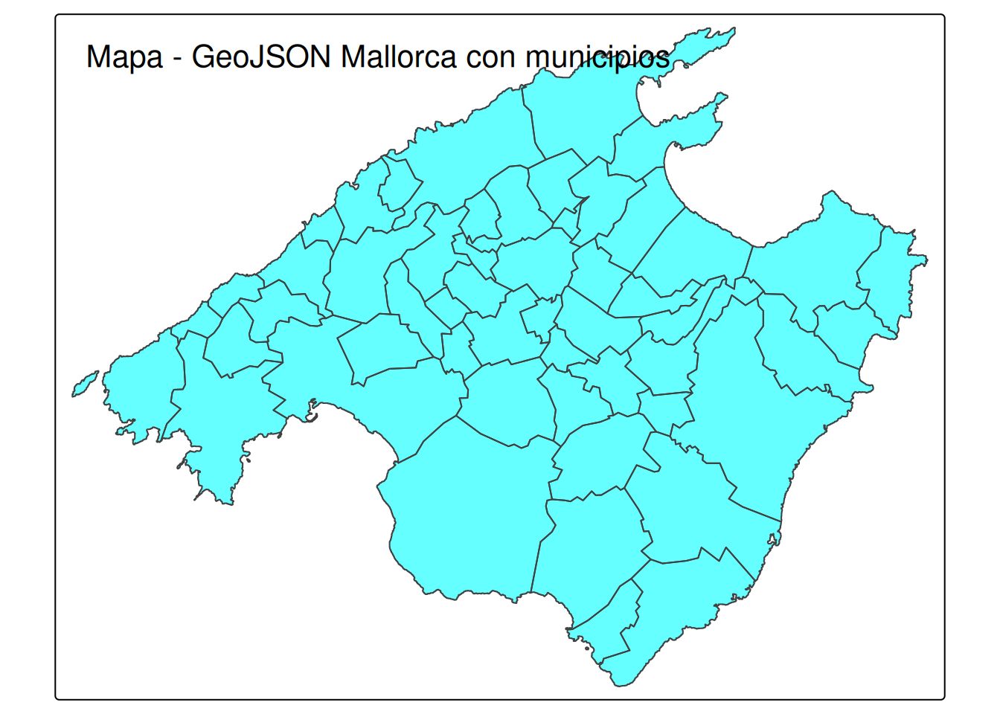

Se entrega en grupos que deben de estar constituidos en la actividad de grupos. Los grupos son de 2 o 3 ESTUDIANTES, loa caso especiales consultadlos con el profesor para que los autorice.
Hemos seleccionado las variables que nos parecen más interesantes y hemos guardado el objeto como listings_common0_select.RData en clean_data/mallorca/
listings
Hemos cargado el objeto listings0 que contiene los datos varios periodos de apartamentos de inside Airbnb de Mallorca seleccionando cuantas variables nos parecen más interesantes.
Separararemos la fecha del scrapping que es eb la que se observon el fichero y nos quedaremos con los apartamentos que aparecen en las 9 periodos scrapeados.
spc_tbl_ [398,782 × 6] (S3: spec_tbl_df/tbl_df/tbl/data.frame)
$ listing_id : num [1:398782] 69998 69998 69998 69998 69998 ...
$ id : num [1:398782] 881474 4007103 4170371 4408459 4485779 ...
$ date : Date[1:398782], format: "2012-01-24" "2013-04-02" ...
$ reviewer_id : num [1:398782] 1595616 3868130 5730759 5921885 810469 ...
$ reviewer_name: chr [1:398782] "Jean-Pierre" "Jo And Mike" "Elizabeth" "Jone" ...
$ comments : chr [1:398782] "This place was charming! Lorenzo himself is a very warm and engaging host and made us feel very welcome. \r<br/"| __truncated__ "We had a four night stay at this gorgeous apartment and it was absolutely perfect. It's really pretty, beautifu"| __truncated__ "Lor's apartment looks exactly like the pictures! It is perfectly located for historic Palma - close to the Cath"| __truncated__ "Wonderful place! 10/10. Charming, spacious and comfortable. Looks even more splendid than in the pictures. The "| __truncated__ ...
- attr(*, "spec")=
.. cols(
.. listing_id = col_double(),
.. id = col_double(),
.. date = col_date(format = ""),
.. reviewer_id = col_double(),
.. reviewer_name = col_character(),
.. comments = col_character()
.. )
- attr(*, "problems")=<externalptr>
Código
head(reviews)
# A tibble: 6 × 6
listing_id id date reviewer_id reviewer_name comments
<dbl> <dbl> <date> <dbl> <chr> <chr>
1 69998 881474 2012-01-24 1595616 Jean-Pierre "This place was charm…
2 69998 4007103 2013-04-02 3868130 Jo And Mike "We had a four night …
3 69998 4170371 2013-04-15 5730759 Elizabeth "Lor's apartment look…
4 69998 4408459 2013-05-03 5921885 Jone "Wonderful place! 10/…
5 69998 4485779 2013-05-07 810469 Andrea "My boyfriend and I, …
6 69998 4619699 2013-05-15 3318059 Devii "We had a very last m…
neighbourhoods.csv
Son dos columnas y la primera es una agrupación de municipios (están NA) y la segunda es el nombre del municipio
spc_tbl_ [53 × 2] (S3: spec_tbl_df/tbl_df/tbl/data.frame)
$ neighbourhood_group: logi [1:53] NA NA NA NA NA NA ...
$ neighbourhood : chr [1:53] "Alaró" "Alcúdia" "Algaida" "Andratx" ...
- attr(*, "spec")=
.. cols(
.. neighbourhood_group = col_logical(),
.. neighbourhood = col_character()
.. )
- attr(*, "problems")=<externalptr>
Código
head(municipios)
# A tibble: 6 × 2
neighbourhood_group neighbourhood
<lgl> <chr>
1 NA Alaró
2 NA Alcúdia
3 NA Algaida
4 NA Andratx
5 NA Ariany
6 NA Artà
neighbourhoods.geojson
Es el mapa de Mallorca, o podemos leer así:
Código
library(sf)library(tmap)# Leer el archivo GeoJSONgeojson_sf <- sf::st_read("data/mallorca/2025-09-21/neighbourhoods.geojson")
Reading layer `neighbourhoods' from data source
`C:\Users\ricuib\Documents\Docencia_25_26\MAT3GIN\taller_AIRBNB\tallerMat3_25_26\data\mallorca\2025-09-21\neighbourhoods.geojson'
using driver `GeoJSON'
Simple feature collection with 53 features and 2 fields
Geometry type: MULTIPOLYGON
Dimension: XY
Bounding box: xmin: 2.303195 ymin: 39.26403 xmax: 3.479028 ymax: 39.96236
Geodetic CRS: WGS 84
Código
# Crear un mapa# interactivotmap_mode("plot") # Cambiar a modo view/plot que es interactivo/estáticotm_shape(geojson_sf) +tm_polygons(col ="cyan", alpha =0.6) +tm_layout(title ="Mapa - GeoJSON Mallorca con municipios")

Tenéis que consultar en la documentación de inside Airbnb para saber que significa cada variable. Os puede ser útil leer los ficheros DATA_ABB_modelo_de_datos.html y DATA_ABB_modelo_de_datos.pdf en los que se explica el modelo de datos de inside Airbnb y como se cargan en el espacio de trabajo.
Responder las siguientes preguntas con formato Rmarkdown (.Rmd) o quarto (.qmd) y entregad la fuente un fichero en formato html como salida del informe. Se puntúa la claridad de la respuesta, la calidad de la redacción y la corrección de la respuesta.
Pregunta 1 (1punto)
Del fichero con los datos de listings listings0 calcula los estadísticos descriptivos de las variable price y de la variable number_of_reviews agrupados por municipio y por periodo.
Presenta los resultados con una tabla de kableExtra.
Pregunta 2 (1punto)
Consideremos las variables price y number_of_reviews de Pollença y Palma del periodo “2024-09-13”, del fichero listing_common0_select.RData. Estudiad si estos datos se aproximan a una distribución normal gráficamente. Para ello, dibujad el histograma, la función “kernel-density” que aproxima la densidad y la densidad de la normal de media y varianza las de las muestras de las variables price (para precios mayores de 50 y menores de 400) y number_of_reviews para Palma y
Pollença
Pregunta 3 (1punto)
Con los datos de listings0 de todos los periodos, contrastar si la media del precio en Alcudia es igual a la de Palma contra que es mayor que en Palma para los precios mayores que 50 euros y menores de 400. Construid la hipótesis nula y alternativa, calculad el p-valor y el intervalo de confianza asociado al contraste. Justifica técnicamente la conclusión del contraste.
Pregunta 4 (1punto)
Con los datos de listings0, contrastar si las medias de los precios en Alcudia entre los periodos 2025-06-15 y 2025-09-21 son iguales contra que son menores en 2023. Construid la hipótesis nula y alternativa, calculad el p-valor y el intervalo de confianza asociado al contraste.
Haced un diagrama de caja comparativo de los precios en Alcudia por periodo y coméntalo.
Pregunta 5 (1 punto)
Comparar con un bopxlot de las valoraciones medias review_scores_rating para Alcudia, Palma, Calvià y Pollença. Hacer el gráfico con ggplot2 y todo lujo de destalles.
Pregunta 6 (1 punto)
Calcular la proporción de apartamentos de la muestra “2025-09-21” con media de valoración review_scores_rating mayor que 4 en Alcudia y en Calvià son iguales contra que son distintas. Construid un intervalo de confianza para la diferencia de proporciones.
Pregunta 7 (1punto)
Calcular la proporción de apartamentos de los periodos 2025-06-15 y 2025-09-21 con media de valoración review_scores_rating mayor que 4 en Palma y en Pollença son iguales contra que son distintas.
Pregunta 7
Agrupa las variables review_scores_rating y review_scores_location de listings0 en 5 categorías cada una y construid una tabla de contingencia con las dos variables agrupadas. Agrupar de forma que no cruces de categorías vacías. Contratar si esta varibles son independientes con un test \chi^2.
Buscan información sobre el coeficiente de contingencia de Carl Pearson, cacularlo desde la salida de chisq.test interpretarlo en esta caso
Construye un data set con las variables review_scores_rating, review_scores_cleanliness, review_scores_location, review_scores_value de listings0 y el municipio/zona neighbourhood_cleansed
Calcula la matriz de correlaciones entre estas variables y haz un gráfico de pares (pair plot) con la librería GGally. Comenta los resultados.
Haz un matrixplot de las correlaciones con la librería corrplot. Comenta los resultados.
Pregunta 9 (2 puntos)
La Zipf’s law es una ley empírica que dice que la frecuencia de las palabras en un texto es inversamente proporcional a su rango. Decidid si la ley se ajusta a los datos de la longitud de los comentarios de los apartamentos de la muestra “2025-09-21” Mallorca, haced lo mismo para description de listings0. Para ello, haced un análisis de regresión lineal de la frecuencia de las longitudes de los comentarios/descripciones de los apartamentos de Mallorca y el rango de las longitudes de los comentarios. Justificad la respuesta, estadísticamente y gráficamente.
Como ayuda estudiar el siguiente código, utilizadlo y comentadlo.
Código
library(stringr)# para las reseñashead(reviews)
# A tibble: 6 × 6
listing_id id date reviewer_id reviewer_name comments
<dbl> <dbl> <date> <dbl> <chr> <chr>
1 69998 881474 2012-01-24 1595616 Jean-Pierre "This place was charm…
2 69998 4007103 2013-04-02 3868130 Jo And Mike "We had a four night …
3 69998 4170371 2013-04-15 5730759 Elizabeth "Lor's apartment look…
4 69998 4408459 2013-05-03 5921885 Jone "Wonderful place! 10/…
5 69998 4485779 2013-05-07 810469 Andrea "My boyfriend and I, …
6 69998 4619699 2013-05-15 3318059 Devii "We had a very last m…
Call:
lm(formula = tbl2$Freq ~ tbl2$Rank)
Residuals:
Min 1Q Median 3Q Max
-1031.8 -786.9 -201.4 452.6 4046.6
Coefficients:
Estimate Std. Error t value Pr(>|t|)
(Intercept) 2141.9530 85.2279 25.13 <2e-16 ***
tbl2$Rank -5.1260 0.2469 -20.76 <2e-16 ***
---
Signif. codes: 0 '***' 0.001 '**' 0.01 '*' 0.05 '.' 0.1 ' ' 1
Residual standard error: 1001 on 580 degrees of freedom
Multiple R-squared: 0.4263, Adjusted R-squared: 0.4253
F-statistic: 430.9 on 1 and 580 DF, p-value: < 2.2e-16
Código
sol2=lm(tbl2$Freq~tbl2$Log_Rank)summary(sol2)
Call:
lm(formula = tbl2$Freq ~ tbl2$Log_Rank)
Residuals:
Min 1Q Median 3Q Max
-896.17 -547.03 7.73 443.85 1629.79
Coefficients:
Estimate Std. Error t value Pr(>|t|)
(Intercept) 8267.68 162.94 50.74 <2e-16 ***
tbl2$Log_Rank -1405.73 29.51 -47.63 <2e-16 ***
---
Signif. codes: 0 '***' 0.001 '**' 0.01 '*' 0.05 '.' 0.1 ' ' 1
Residual standard error: 596.2 on 580 degrees of freedom
Multiple R-squared: 0.7964, Adjusted R-squared: 0.796
F-statistic: 2269 on 1 and 580 DF, p-value: < 2.2e-16
Código
sol3=lm(tbl2$Log_Freq~tbl2$Log_Rank)summary(sol3)
Call:
lm(formula = tbl2$Log_Freq ~ tbl2$Log_Rank)
Residuals:
Min 1Q Median 3Q Max
-4.3152 -0.5008 0.0081 0.5191 1.6510
Coefficients:
Estimate Std. Error t value Pr(>|t|)
(Intercept) 20.58666 0.24105 85.40 <2e-16 ***
tbl2$Log_Rank -3.15950 0.04366 -72.36 <2e-16 ***
---
Signif. codes: 0 '***' 0.001 '**' 0.01 '*' 0.05 '.' 0.1 ' ' 1
Residual standard error: 0.882 on 580 degrees of freedom
Multiple R-squared: 0.9003, Adjusted R-squared: 0.9001
F-statistic: 5237 on 1 and 580 DF, p-value: < 2.2e-16
Ejecutar el código
---title: "ENUNCIADO taller en grupo Mat3 GIN 2025-2026"author: "Taller"lang: esformat: html: theme: superhero toc: true toc_depth: 4 html-math-method: katex code-tools: true code-fold: true collapse: true keep-md: true code-overflow: wrap---```{r setup, include=FALSE}knitr::opts_chunk$set(echo = TRUE, message = FALSE, warning = FALSE,cache=FALSE)# packageslibrary(tidyverse)```# Instrucciones para el tallerSe entrega en grupos que deben de estar constituidos en la actividad de grupos. Los grupos son de 2 o 3 ESTUDIANTES, loa caso especiales consultadlos con el profesor para que los autorice.**Enlaces y Bibliografía**- [R for data science, Hadley Wickham, Garret Grolemund.](https://r4ds.had.co.nz/)- [Fundamentos de ciencia de datos con R.](https://cdr-book.github.io/)- [Tablas avanzadas: kable, KableExtra.](https://haozhu233.github.io/kableExtra/awesome_table_in_html.html)- [Geocomputation with R, Robin Lovelace, Jakub Nowosad, Jannes Muenchow](https://r.geocompx.org/)- Apuntes de R-basico y tidyverse moodel MAT3.## Objetivo MALLORCALeeremos los siguientes datos de la zona de etiqueta `mallorca` con el código siguiente:```{r}load("clean_data/mallorca/listing_common0.RData")ls()listings0 = listings_common0 %>%select(id, scrape_id, listing_url, neighbourhood_cleansed, price, number_of_reviews, review_scores_rating, review_scores_rating, review_scores_cleanliness, review_scores_location, review_scores_value, number_of_reviews, accommodates, bathrooms_text, bedrooms, beds, minimum_nights, description, latitude, longitude, property_type, room_type)```Hemos seleccionado las variables que nos parecen más interesantes y hemos guardado el objeto como `listings_common0_select.RData` en `clean_data/mallorca/`**listings**Hemos cargado el objeto `listings0` que contiene los datos varios periodos de apartamentos de inside Airbnb de Mallorca seleccionando cuantas variables nos parecen más interesantes.Separararemos la fecha del scrapping que es eb la que se observon el fichero y nos quedaremos con los apartamentos que aparecen en las 9 periodos scrapeados.```{r}listings0= listings0 %>%mutate(date=as.Date(substr(as.character(scrape_id),1,8),format="%Y%m%d"),.after=id)```Ahora veamos la fechas de los sceapings y el número de veces que aparecen cada apartamentos.```{r}table(listings0$date)```Hay 8 periodos de scrapping y vamos a quedarnos con los apartamentos que aparecen en todos los periodosVemos que cada apartamento aparece 8 veces una por periodo.```{r}table(table(listings0$id))```Notemos que cada apartamento:- queda identificado por id y por date que nos da el periodo en la que apareció el dato.- así que cada apartamento aparece 8 veces ya que hemos elegido solo los apartamentos que aparecen en las 8 muestras.- Las muestras son `r unique(listings0$date)`,```{r}unique(listings0$date)```**reviews**Estos datos necesitan leerse de forma adecuada, las columnas 1, 2 y 4 deben ser de tipo `character` las otras son correctas```{r}reviews=read_csv("data/mallorca/2025-09-21/reviews.csv.gz")str(reviews)head(reviews)```**neighbourhoods.csv**Son dos columnas y la primera es una agrupación de municipios (están NA) y la segunda es el nombre del municipio```{r}municipios=read_csv("data/mallorca/2025-09-21/neighbourhoods.csv")str(municipios)head(municipios)```**neighbourhoods.geojson**Es el mapa de Mallorca, o podemos leer así:```{r}library(sf)library(tmap)# Leer el archivo GeoJSONgeojson_sf <- sf::st_read("data/mallorca/2025-09-21/neighbourhoods.geojson")# Crear un mapa# interactivotmap_mode("plot") # Cambiar a modo view/plot que es interactivo/estáticotm_shape(geojson_sf) +tm_polygons(col ="cyan", alpha =0.6) +tm_layout(title ="Mapa - GeoJSON Mallorca con municipios")```Tenéis que consultar en la documentación de inside Airbnb para saber que significa cada variable. Os puede ser útil leer los ficheros [DATA_ABB_modelo_de_datos.html](DATA_ABB_modelo_de_datos.html) y [DATA_ABB_modelo_de_datos.pdf](DATA_ABB_modelo_de_datos.html) en los que se explica el modelo de datos de inside Airbnb y como se cargan en el espacio de trabajo.Responder las siguientes preguntas con formato Rmarkdown (.Rmd) o quarto (.qmd) y entregad la fuente un fichero en formato html como salida del informe. Se puntúa la claridad de la respuesta, la calidad de la redacción y la corrección de la respuesta.## Pregunta 1 (**1punto**)Del fichero con los datos de listings `listings0` calcula los estadísticos descriptivos de las variable `price` y de la variable `number_of_reviews` agrupados por municipio y por periodo.Presenta los resultados con una tabla de kableExtra.## Pregunta 2 (**1punto**)Consideremos las variables `price` y `number_of_reviews` de Pollença y Palma del periodo "2024-09-13", del fichero `listing_common0_select.RData`. Estudiad si estos datos se aproximan a una distribución normal gráficamente. Para ello, dibujad el histograma, la función "kernel-density" que aproxima la densidad y la densidad de la normal de media y varianza las de las muestras de las variables `price` (para precios mayores de 50 y menores de 400) y `number_of_reviews` para Palma y Pollença## Pregunta 3 (**1punto**)Con los datos de `listings0` de todos los periodos, contrastar si la media del precio en Alcudia es igual a la de Palma **contra** que es mayor que en Palma para los precios mayores que 50 euros y menores de 400. Construid la hipótesis nula y alternativa, calculad el $p$-valor y el intervalo de confianza asociado al contraste. Justifica técnicamente la conclusión del contraste.## Pregunta 4 (**1punto**)Con los datos de `listings0`, contrastar si las medias de los precios en Alcudia entre los periodos 2025-06-15 y 2025-09-21 son iguales contra que son menores en 2023. Construid la hipótesis nula y alternativa, calculad el $p$-valor y el intervalo de confianza asociado al contraste.Haced un diagrama de caja comparativo de los precios en Alcudia por periodo y coméntalo.## Pregunta 5 (**1 punto**)Comparar con un bopxlot de las valoraciones medias `review_scores_rating` para Alcudia, Palma, Calvià yPollença. Hacer el gráfico con ggplot2 y todo lujo de destalles.## Pregunta 6 (**1 punto**)Calcular la proporción de apartamentos de la muestra "2025-09-21" con media de valoración `review_scores_rating` mayor que 4 en Alcudia y en Calvià son iguales contra que son distintas. Construid un intervalo de confianza para la diferencia de proporciones.## Pregunta 7 (**1punto**)Calcular la proporción de apartamentos de los periodos 2025-06-15 y 2025-09-21 con media de valoración `review_scores_rating` mayor que 4 en Palma y en Pollença son iguales contra que son distintas.### Pregunta 7 Agrupa las variables `review_scores_rating` y `review_scores_location` de `listings0` en 5 categorías cada una y construid una tabla de contingencia con las dos variables agrupadas. Agrupar de forma que no cruces de categorías vacías. Contratar si esta varibles son independientes con un test $\chi^2$. Buscan información sobre el coeficiente de contingencia de Carl Pearson, cacularlo desde la salida de chisq.test interpretarlo en esta caso```{r}table(cut(listings0$review_scores_rating,5),cut(listings0$review_scores_location,5))```## Pregunta 9 (**3 puntos**)Construye un data set con las variables review_scores_rating, review_scores_cleanliness, review_scores_location, review_scores_value de listings0 y el municipio/zona `neighbourhood_cleansed`Calcula la matriz de correlaciones entre estas variables y haz un gráfico de pares (pair plot) con la librería GGally. Comenta los resultados.Haz un matrixplot de las correlaciones con la librería corrplot. Comenta los resultados.## Pregunta 9 (**2 puntos**)La [Zipf's law es una ley empírica](https://en.wikipedia.org/wiki/Zipf%27s_law#Word_frequencies_in_natural_languages) que dice que la frecuencia de las palabras en un texto es inversamente proporcional a su rango. Decidid si la ley se ajusta a los datos de la longitud de los comentarios de los apartamentos de la muestra "2025-09-21" Mallorca, haced lo mismo para description de `listings0`. Para ello, haced un análisis de regresión lineal de la frecuencia de las longitudes de los comentarios/descripciones de los apartamentos de Mallorca y el rango de las longitudes de los comentarios. Justificad la respuesta, estadísticamente y gráficamente.Como ayuda estudiar el siguiente código, utilizadlo y comentadlo.```{r}library(stringr)# para las reseñashead(reviews)length_rewiews=stringr::str_count(reviews$comments,"\\w+")barplot(table(length_rewiews))#para las descripcioneslength_description=stringr::str_count(listings0$description,"\\w+")barplot(table(length_description))```Y ahora se calculan los rango os lo dejo para reviews par desctption lo haceís vosotros```{r}aux=table(length_rewiews)head(aux)head(names(aux))tbl=tibble( L=as.numeric(names(aux)),Freq=as.numeric(aux),Rank=rank(L),Log_Freq=log(Freq),Log_Rank=log(Rank))str(tbl)``````{r}tbl2=tbl %>%filter(Rank>10) %>%filter(Rank<1000)sol1=lm(tbl2$Freq~tbl2$Rank)summary(sol1)sol2=lm(tbl2$Freq~tbl2$Log_Rank)summary(sol2)sol3=lm(tbl2$Log_Freq~tbl2$Log_Rank)summary(sol3)```